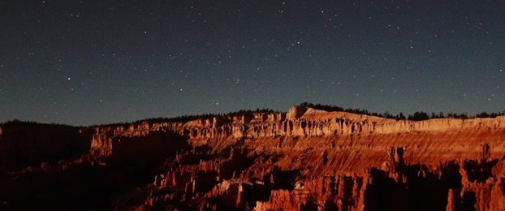
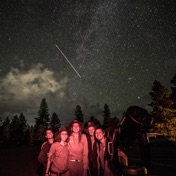
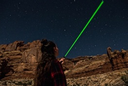

Astronomy Outreach Internship
at Bryce Canyon National Park

Become an Astronomy Ranger this summer in Utah’s canyon country through a unique astronomy outreach internship. Millions of visitors visit southern Utah’s parks each year, and its dark skies are a wonderful place to get people excited about astronomy. The two selected interns will spend the summer living at Bryce Canyon NP and participating in their night time programs. These programs involve giving talks about astronomy and dark sky preservation and operating telescopes. These internship positions are specifically targeted at undergraduate students interested in teaching astronomy to the general public.
Details:
- The position runs for 11 weeks with a preferred start date in mid-May.
- A $6500 stipend will be supplied to cover expenses and travel to/from Bryce.
- Free lodging will be provided by the park.
- Typically, 75% of your time will be spent on astronomy and dark sky related activities, while the other 25% of the time you will be doing other park activities (e.g. working at the front desk answering questions).
- Your primary training and interactions will be with interpretive rangers at Bryce.
Application Process: Expected Deadline Feb. 2027
Your application should include a one-page letter describing (1) your interest in the position, (2) why you’d be a good fit for the job, and (3) how the position fits in with your career goals. Please be sure to highlight any experiences with science communication, working with telescopes, doing night sky outreach, dark sky advocacy, or reaching out to diverse populations. You should also include a CV clearly listing your astronomy course work and any education or outreach activities you’ve participated in, as well as the contact information of your two recommenders. Only US citizens and permanent residents and current undergraduate students are eligible (applications from graduating seniors welcome!). Note that applications will also be shared with Dark Ranger Telescope Tours, an astrotourism company near Bryce; please let us know if you're interested in opportunities with them.
Send these materials as a single PDF to Dr. Anil Seth:
with the subject heading:
Bryce Canyon Application
Finally arrange for two letters of recommendation to be sent directly to aseth@astro.utah.edu before the deadline with the subject heading:
Bryce Canyon Recommendation
Past interns
- 2015 Interns: Chloe Stabler & Shannon Osborne
- 2016 Interns: Charles Anderson & Dani Schurhammer
- 2017 Interns: Kira Fritsche & Sylvia Kowalski
- 2018 Interns: Nicole Zawadzki & Madeleine Beck
- 2019 Interns: Riley McGlasson & Emily Walla
- 2020 Interns: Ben Weiser & Jason Trump
- 2021 Interns: Caleb Riggs & Samantha Creech
- 2022 Interns: Anna Stephens & Emma Campbell
- 2023 Interns: Rafid Quayum & Claire Thilenius
- 2024 Interns: Nayda Anjou & Leah Sickman
- 2025 Interns: Emma Wallace & Kaitlyn Barth
- 2026 Interns: Rachel Gean & Avery Schweitzer
Funded by the National Science Foundation, the Willard L. Eccles Foundation, the Sorenson Legacy Foundation, and Rebecca and Sharad Seth.

